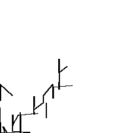
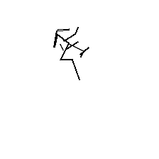
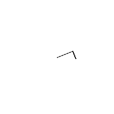
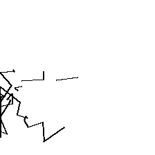
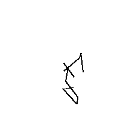
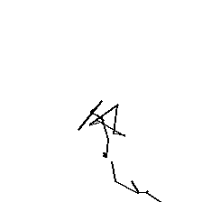

Activation-Injection demo (layer 12, AV from checkpoints/v1/L12/iter_00)
Each drawing is sampled from the AV with the activation of the corresponding text input injected at <ACT_TOKEN>. NO RL training of faithfulness; this just shows the architecture runs end-to-end.

capital_france
The capital of France is
strokes=57, malformed=58
smile
She smiled brightly at the surprise.
strokes=23, malformed=93
dog
I am thinking about a dog.
strokes=2, malformed=294
triangle
Imagine a triangle inscribed in a circle.
strokes=43, malformed=63
storm
When the storm hit, the village
strokes=13, malformed=101
paris
Paris, the city of lights, is famous for the Eiffel
strokes=28, malformed=20